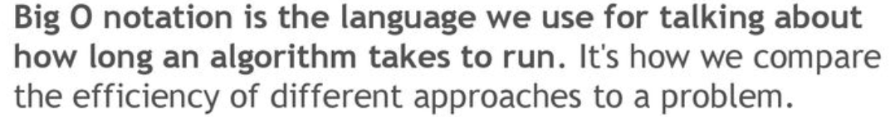
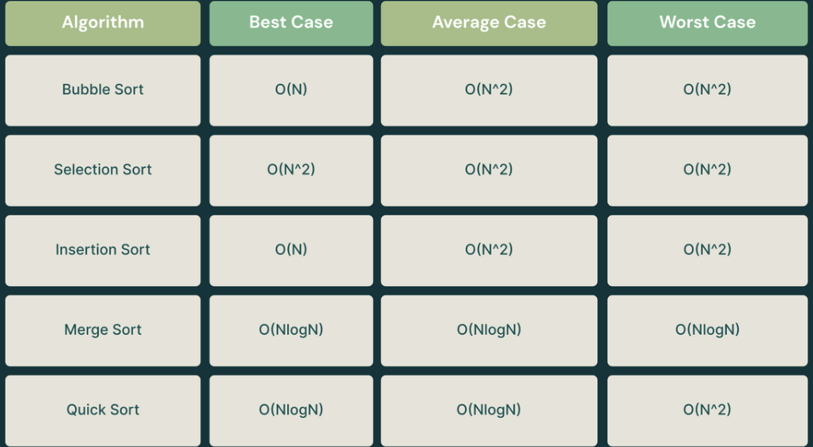
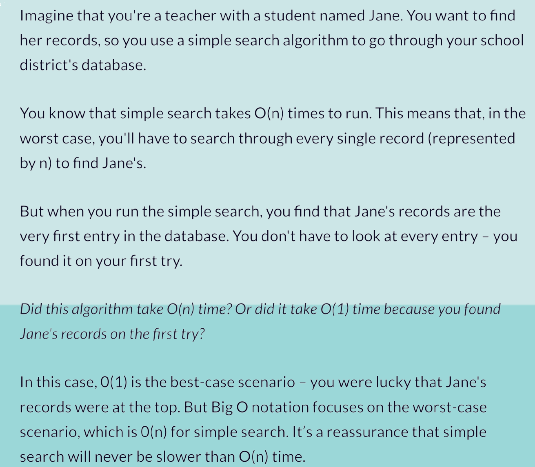

Big O Notation - Calculaiting Algorithm Efficiency.

Alexandra Suvorova, 2023
What is Big O Notation?

Why do we need Big O Notation?
Imagine you have a list of 10 objects, and you want to sort them in order.
There’s a
whole bunch of algorithms you can use to make that happen, but not all algorithms are built equal.
It is simply a way of comparing algorithms.

I propose to consider Big O Notation - Time Complexity using this table:
There are 5 sorting algorithms in the table and each of them has its own time complexity. Exactly Big O Notation helps us understand the performance of sorting algorithms in terms of their time complexity and apply them correctly in the right situations.
Life Example:
Constant Notation: O(1)
The constant notation describes an algorithm that will always
execute
in the same
execution time regardless of the size of the data set.
Linear Notation: O(N)
A linear algorithm is used when the execution time of an
algorithm grows
in direct
proportion to
the size of the data set it is processing.
.png)
Logarithmic Notation: O(log(N))
A logarithmic algorithm O(log(N)) is an algorithm whose growth decreases
when the data
set
increase following a logarithmic curve.
You can use a logarithmic algorithm (based on
a binary search)
to play the game Guess the Number.
More about Binary search
Binary search is widely used in various places where search in ordered data is
required.
For example: search in search engines: In many search engines, binary
search is used to quickly search for
documents or records that meet user requests. Binary permission search requires time to search and process the
results.
Bibliography:
- https://flexiple.com/algorithms/big-o-notation-cheat-sheet/
- https://www.linkedin.com/pulse/big-o-notation-simple-explanation-examples-pamela-lovett/
- https://www.data-structures-in-practice.com/big-o-notation/
- https://blog.devgenius.io/big-o-notation-583adf20af1
- https://www.freecodecamp.org/news/big-o-notation-explained-with-examples/
- https://www.crio.do/blog/time-complexity-explained/
- https://www.101computing.net/big-o-notation/